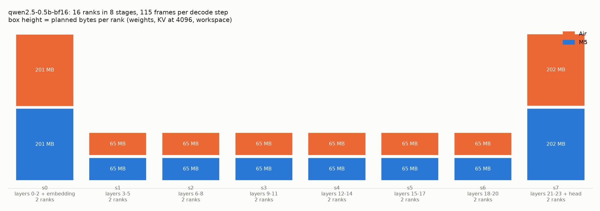
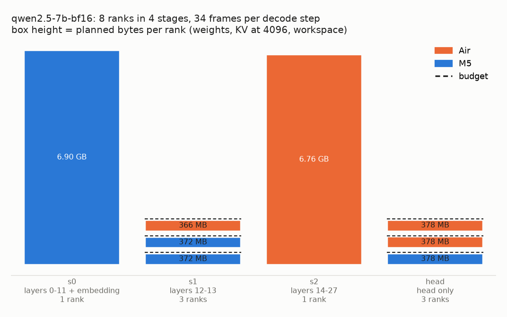
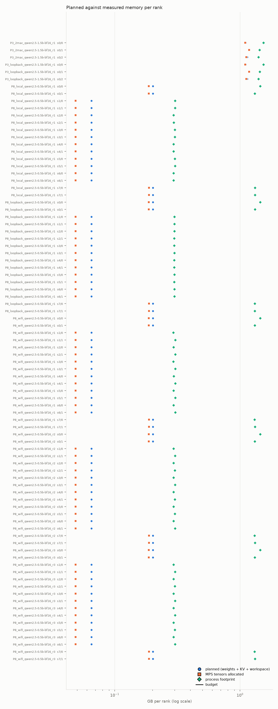
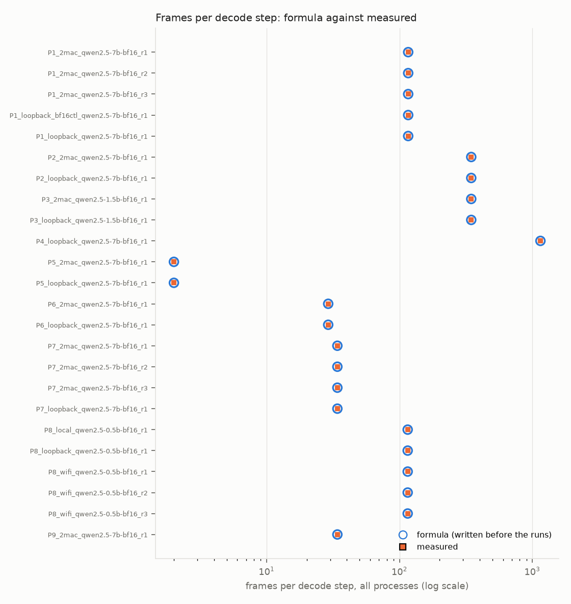

סיכום ניסויים, 15 בנובמבר 2026. המשך ישיר לסיכום "גבול הזיכרון של שתי מכונות".
בסיכום הקודם מצאנו שעל שתי המכונות שלנו הזיכרון לא מכריח חלוקה בתוך שכבה. נשארה שאלה כללית יותר: האם אפשר לבנות כל צורה של חלוקה, ולסמוך על התכנון שלה? חילקנו אותה לארבע שאלות מדידות:
המתכנן מקבל רשימת שלבים. לכל תהליך יש משקל יחסי, ואפשר לתת לו תקציב זיכרון. מכאן הוא מחשב לכל תהליך בדיוק מה הוא מחזיק:
סכום החלקים בתוך קבוצה נעשה בסדר קבוע, ב-fp32, על ה-CPU. לכן כל התהליכים בקבוצה מחזיקים בדיוק אותו מצב.
| מודל | קבוצה | ראשי קשב לכל תהליך | עותקים של ראשי KV (במודל יש) | איפה | זהות | ריצות |
|---|---|---|---|---|---|---|
| 7B | 2, ביחס 3:2 | 17, 11 | 5 (4) | מק אחד | 8/8 | 1 |
| 7B | אותו דבר, סכום ב-bf16 | מק אחד | 8/8 | 1 | ||
| 7B | 2, ביחס 3:2 | 17, 11 | 5 (4) | M5 ו-Air | 8/8 | 3 |
| 7B | 3, ראשים לפי KV | 14, 7, 7 | 4 (4) | מק אחד | 8/8 | 1 |
| 7B | 3, ראשים לפי KV | 14, 7, 7 | 4 (4) | שניים ב-M5, אחד ב-Air | 8/8 | 1 |
| 1.5B | 3, שווה | 4, 4, 4 | 4 (2) | מק אחד | 8/8 | 1 |
| 1.5B | 3, שווה | 4, 4, 4 | 4 (2) | שניים ב-M5, אחד ב-Air | 8/8 | 1 |
| 7B | 5, שווה | 6, 6, 6, 5, 5 | 8 (4) | מק אחד | 8/8 | 1 |
ציון הנכונות שווה לייחוס בכל שורה.
| מודל | שלבים (תהליכים בכל שלב) | איפה | זהות | פרומפט ארוך: טוקן הפרידה | ריצות |
|---|---|---|---|---|---|
| 7B | 1, 1 (חלוקה לפי שכבות בלבד) | מק אחד | 8/8 | אין. כל 256 זהים | 1 |
| 7B | 1, 1 | M5, ואז Air | 8/8 | 72 | 1 |
| 7B | 1, 3, 1 | מק אחד | 8/8 | 49 | 1 |
| 7B | 1, 3, 1 | M5; קבוצה של שניים ב-M5 ואחד ב-Air; Air | 8/8 | 49 | 1 |
| 0.5B | 8 שלבים של זוגות, 16 תהליכים | מק אחד | 8/8 | 60 | 1 |
| 0.5B | 8 שלבים של זוגות, כל זוג חצוי בין המכונות | M5 ו-Air | 8/8 | 10 | 3 |
| 0.5B | 8 שלבים של זוגות, כל זוג על מכונה אחת, השלבים מתחלפים | M5 ו-Air | 8/8 | 10 | 1 |

גובה כל תיבה הוא הזיכרון המתוכנן לתהליך. כחול: M5. כתום: Air.
התצורה (ה-7B):
לכל תהליך חלש תקציב של 0.40 GB. שכבה אחת של 7B היא 0.466 GB. ראש הפלט 1.09 GB. כלומר אף תהליך חלש לא יכול להחזיק יחידה שלמה.

הקו המקווקו הוא התקציב של כל תהליך חלש.
| ניסוי | תוצאה | זיכרון מתוכנן לתהליך חלש | זיכרון בפועל לתהליך חלש |
|---|---|---|---|
| התצורה, על מק אחד | עבר, 8/8 | 0.32 עד 0.37 GB | 1.26 עד 1.29 GB |
| התצורה, על שתי המכונות | עבר, 3 מתוך 3 ריצות, 8/8 | 0.32 עד 0.37 GB | 1.28 עד 1.37 GB |
| התצורה, כשהתהליכים החלשים על ה-CPU | עבר, 8/8 | 0.32 עד 0.37 GB | 0.16 עד 0.18 GB |
| אותם צמתים, חלוקה לפי שכבות בלבד | המתכנן דוחה, ומציין שלושה תהליכים בשמם | 0.59 GB ו-1.11 GB | |
| אותו דבר, כשעוקפים את המתכנן | נכשל בטעינה, בדיוק בשלושת התהליכים האלה | ||
| התצורה, עם מגבלת הזיכרון של PyTorch בגובה התקציב | נכשל בטעינה, בכל ששת התהליכים החלשים |
מחשב נייד עם מעט זיכרון פנוי יכול להצטרף לקבוצה ולהחזיק חלק מיחידה שגדולה ממנו. דרך ה-GPU של אפל, הכניסה עולה כ-1.3 GB לתהליך. כמתנדב CPU היא עולה את חלקו ועוד כ-0.15 GB.
בכל תהליך, בכל ריצה שהושלמה, הבתים שנטענו שווים בדיוק לבתים שהמתכנן חישב. 167 מופעים של תהליך ב-30 ריצות.

עיגול כחול: מה שהמתכנן חישב. ריבוע כתום: הטנזורים ב-GPU. מעוין ירוק: מה שהתהליך תופס בפועל. קו שחור: התקציב.
כתבנו נוסחה למספר ההודעות בכל צעד, לפני הריצות. היא שווה למדידה בכל 24 ריצות ההשמה.
frames = (n_0 - 1) + n_0 (n_0 - 1) + sum over stages of 2 L_s n_s (n_s - 1) + sum over hops of n_next + (n_head - 1 or n_head)
token embedding two all-reduces per layer stage hops headכאן n_s הוא מספר התהליכים בשלב, ו-L_s מספר השכבות בו.
n תהליכים, כל סכום עולה n(n-1) הודעות. יש שני סכומים בכל שכבה.
| תווית | התצורה |
|---|---|
| P1 | 7B, זוג ביחס 3:2 |
| P2 | 7B, קבוצה של 3 עם ראשים לפי KV |
| P3 | 1.5B, קבוצה של 3 |
| P4 | 7B, קבוצה של 5 |
| P5 | 7B, שני שלבים, חלוקה לפי שכבות בלבד |
| P6 | 7B, שלבים של 1, 3, 1 |
| P7 | 7B, צמתים חלשים בתוך קבוצות |
| P8 | 0.5B, 8 שלבים של זוגות |
| P9 | כמו P7, התהליכים החלשים על ה-CPU |
| loopback, one Mac | הכל על ה-M5 |
| 2mac, two Macs, wifi, local | על שתי המכונות |
בזיכרון, קבוצה לא שווה עולה מעט. כשגבול נופל באמצע קבוצת ראשי KV, ראש ה-KV נשמר פעמיים.
| קבוצה ב-7B | עותקים של ראשי KV (במודל יש 4) | תוספת משקלים לשכבה | תוספת KV ב-4096 טוקנים, לכל המודל |
|---|---|---|---|
| 17, 11 ראשים | 5 | 1.8 MB | 59 MB |
| 10, 9, 9 ראשים (מחושב, לא הורץ) | 6 | 3.7 MB | 117 MB |
| 6, 6, 6, 5, 5 ראשים | 8 | 7.3 MB | 235 MB |
| 14, 7, 7 ראשים (לפי KV) | 4 | 0 | 0 |
שכבה של 7B היא 466 MB. גם בקבוצה של 5 התוספת קטנה מ-2 אחוז. חלוקת ראשים לפי גבולות ה-KV מבטלת אותה.
ברשת, קבוצה עולה הרבה. מספר ההודעות גדל כריבוע של גודל הקבוצה.
זה מתיישב עם הסיכום הקודם. על שתי המכונות שלנו, ובמודלים צפופים עד 32B, אף יחידה לא גדולה ממכונה. לכן שם לא נדרשה קבוצה. הקבוצה נחוצה לצמתים קטנים: מחשבים ניידים עם מעט זיכרון פנוי.
| קושי | מה קרה | מה תוקן |
|---|---|---|
| ה-M5 נכנס להחלפה לדיסק | ריצת הייחוס של 7B נתקעה כשהיו פתוחות אפליקציות רבות | אהד סגר אפליקציות. הריצה נעצרה וסומנה. ריצה חדשה עברה |
| שני עותקים של המודל | הבדיקה מול הספרייה הרשמית טענה עותק שני של 7B, בזמן שהעותק של המנוע עוד היה בזיכרון | כלי ההרצה משחרר את המנוע לפני הבדיקה. הריצה נעצרה וסומנה, וריצה חדשה עברה |
| באג אחרי ריצה טובה | ריצת ייחוס של 0.5B הסתיימה ואז נפלה בשמירה | תוקן, והריצה חזרה. שום מספר לא נלקח מהריצות שנעצרו |
| מגבלת הזיכרון של PyTorch | היא דוחה תקציב חוקי מתחת לכ-1.07 GB, בגלל בלוק ה-1 GiB | התקציב נאכף על בתי הטנזורים: במתכנן, בטעינה וב-KV. לצדו מדווח הזיכרון בפועל |
| תצורת הצמתים החלשים על מק אחד | 8 תהליכים תפסו 23.2 GB, על מכונה של 24 GB. המכונה עברה להחלפה לדיסק | הריצה הסתיימה עם פלט נכון, לאט. ריצות חוזרות נעשו על שתי המכונות |
כל המזהים והמספרים נמצאים ב-experiments/session6_hybrid/HYBRID_TABLE.md ובבלוק "Session 6, hybrid placement, 2026-11" ב-experiments/RESULTS.md. הניתוח המלא באנגלית: experiments/session6_hybrid/REPORT.md. התחזיות שנכתבו לפני הריצות: experiments/session6_hybrid/PREDICTIONS.md. קבצי התצורה: experiments/session6_hybrid/placements/.
ייחוס:
R0_qwen2.5-7b-bf16_mps_r3R0_qwen2.5-7b-bf16_cpu_r1R0_qwen2.5-1.5b-bf16_mps_r1, R0_qwen2.5-1.5b-bf16_cpu_r1R0_qwen2.5-0.5b-bf16_mps_r2, R0_qwen2.5-0.5b-bf16_cpu_r1R0_qwen2.5-7b-bf16_mps_r1, R0_qwen2.5-7b-bf16_mps_r2, R0_qwen2.5-0.5b-bf16_mps_r1תשובה 1:
P1_loopback_qwen2.5-7b-bf16_r1, P1_loopback_bf16ctl_qwen2.5-7b-bf16_r1, P1_2mac_qwen2.5-7b-bf16_r1 עד _r3P2_loopback_qwen2.5-7b-bf16_r1, P2_2mac_qwen2.5-7b-bf16_r1P3_loopback_qwen2.5-1.5b-bf16_r1, P3_2mac_qwen2.5-1.5b-bf16_r1P4_loopback_qwen2.5-7b-bf16_r1תשובה 2:
P5_loopback_qwen2.5-7b-bf16_r1, P5_2mac_qwen2.5-7b-bf16_r1P6_loopback_qwen2.5-7b-bf16_r1, P6_2mac_qwen2.5-7b-bf16_r1P8_loopback_qwen2.5-0.5b-bf16_r1, P8_wifi_qwen2.5-0.5b-bf16_r1 עד _r3, P8_local_qwen2.5-0.5b-bf16_r1תשובה 3:
P7_loopback_qwen2.5-7b-bf16_r1, P7_2mac_qwen2.5-7b-bf16_r1 עד _r3P9_2mac_qwen2.5-7b-bf16_r1P7ctl_2mac_qwen2.5-7b-bf16_r1P7ctl_2mac_forced_qwen2.5-7b-bf16_r1P7_2mac_mpscap_qwen2.5-7b-bf16_r1